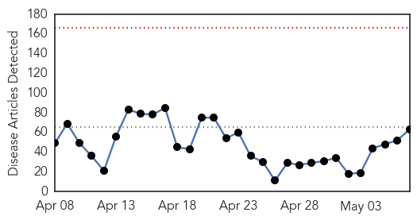
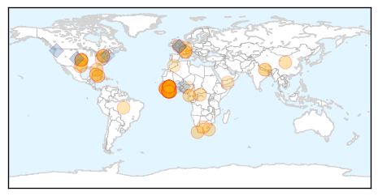
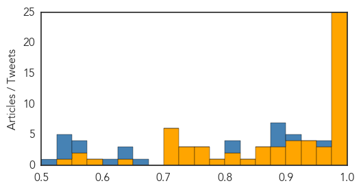
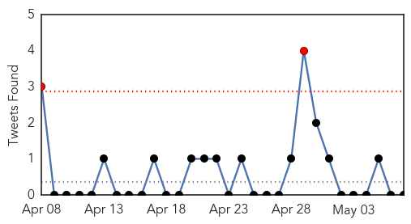
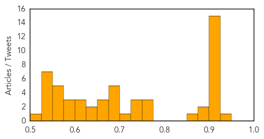

Ebola
30-Day Web Trend
0 alerts, 0 warnings

30-Day Twitter Trend
0 alerts, 0 warnings
Article Locations
Article Confidences
Top Articles:
- 1.000
- On Saturday, The Ebola Outbreak In Liberia Should Officially Be Over
- 1.000
- Liberia hopes to be declared free of Ebola on 9 May 2015 - Liberia
- 1.000
- UN: Lowest number of new weekly Ebola cases in West Africa
- 0.999
- Liberia ready to declare itself free of Ebola
- 0.999
- UN Ebola update: Lowest number of new weekly cases in West Africa
- 0.998
- Liberia emerges from Ebola nightmare
- 0.998
- Ebola deaths pass 11,000 mark – WHO
- 0.998
- Ebola Outbreak In Liberia Almost Over, World Health Organization Says
- 0.998
- Ebola Deaths Pass 11,000 Mark - Says WHO
- 0.998
- Ebola deaths pass 11,000 mark: WHO
- 0.997
- Why disease epidemics need input from anthropology
- 0.997
- Politico SL News Ebola: Moa Wharf new Ebola hot spot in Freetown
- 0.997
- Liberia: Liberia hopes to be declared free of Ebola on 9 May 2015
- 0.996
- Liberia Emerges from Nightmare of Ebola — Naharnet
- 0.996
- Liberia emerges from nightmare of Ebola - Liberia
- 0.994
- Leveraging on Nigeria’s Ebola epidemic to manage future events
- 0.993
- Politico SL News Chinese CDC toughens fight against Ebola
- 0.991
- Ebola experience is a wake-up call for the WHO
- 0.989
- Sierra Leone Joins the World over to Observe World Hand Hygiene Day
- 0.989
- Local doctor battles Ebola in Sierra Leone
- 0.988
- WHO reform needed after Ebola failure: experts - World
- 0.987
- After Nearly Claiming His Life, Ebola Lurked in a Doctor’s Eye
- 0.984
- Y's Men hear about coping with the Ebola crisis
- 0.984
- Not: Cheapest quantity of new weekly Ebola cases in West Africa
- 0.981
- Westporter Leads Leads UN Program to End Ebola Crisis
- 0.970
- Doctor Who Survived Ebola Nearly Lost His Vision
- 0.965
- 'Ubuntu' means Africa must take the lead when dealing with Ebola
- 0.962
- With No Cases, Ebola Vaccines Trial Pointless Here
- 0.949
- Frontline’s ‘Outbreak’ is an eye-opener on how the Ebola crisis happened
- 0.947
- Woodlands based DNA Plasmid manufacturer receives $45M grant for Ebola vaccine The Woodlands Texas Research & Science News on Woodlands Online
- 0.938
- Days After His Recovery, Ebola Lurked inside a Doctors Eye – New You are able to Occasions
- 0.931
- Burial rites, religious rights and contagious diseases
- 0.915
- Indiana University School of Medicine to graduate 404 doctors, scientists Saturday
- 0.913
- May 7 news: DeSalvo nominated for HHS post, paid sick leave, chlamydia outbreak
- 0.910
- What A Secretive Military Agency Is Doing For The Future Of Global Health
- 0.905
- Africa Muslim Agency donates to SaLone Gov’t « Awoko Newspaper
- 0.899
- Doctors Stumped After Survivor's Eye Changed Colors
- 0.882
- U.S. Sen. Jim Inhofe: We must support those troubled by Ebola
- 0.881
- Ebola victim's family says hospital's donation falls short
- 0.868
- Airborne TB poses bigger risk than Ebola - Western Cape
- 0.868
- Former Ebola patient speaks of symptoms, battle against disease
- 0.855
- Liberia Moves Past Ebola Nightmare
- 0.829
- Explainer: The Cuban Health Care System at Home and Abroad
- 0.817
- Don’t forget Ebola – POLITICO
- 0.809
- Cuba Sends Medical Team to Help Nepal Earthquake Victims
- 0.799
- “Today I am Healed. Tomorrow I Return to Heal Another”
- 0.769
- Liberia Completes Phase Two of Ebola Virus Trial Vaccines
- 0.766
- African groups look to the heavens in Wagga
- 0.755
- As Liberia nears end of Ebola outbreak, officials caution against complacency
- 0.746
- Cuba to send medical brigade to Nepal to help quake victims
Showing top 50 articles...
Top Tweets:
- 0.997
- Can the Ebola outbreak rejuvenate global health security? - Medical Xpress http://t.co/LYBBQUi83x ebola EVD
- 0.982
- WHO reform needed after Ebola failure: experts - Medical Xpress http://t.co/2zgUEXpl4A ebola EVD
- 0.978
- On Saturday, The Ebola Outbreak In Liberia Should Officially Be Over - NPR (blog) http://t.co/7eILo43dHk ebola EVD
- 0.975
- On Saturday, The Ebola Outbreak In Liberia Should Be Officially Over - NPR (blog) http://t.co/jTnIDoYNtp ebola EVD
- 0.975
- On Saturday, The Ebola Outbreak In Liberia Should Be Officially Over - NPR (blog) http://t.co/2Rts4UgLRJ ebola EVD
- 0.961
- 1.Ebola is not pandemic. 2.Ebola can be controlled with established measures IF caught early, IF resources available https://t.co/vz1hnoOVT3
- 0.946
- Ebola Virus Lives on Hospital Surfaces for Days http://t.co/tYYUFGy3xe
- 0.931
- The UN has hailed the "extraordinary progress" against the Ebola outbreak in West Africa http://t.co/bQOnkC8BZ0 AfricaAgainstEbola
- 0.899
- RT: Encouraging: @WHO reports lowest number of new weekly Ebola cases in Guinea, Liberia, & Sierra Leone this year. http:…
- 0.883
- Early-warning disease tracking centres 'could help avoid future Ebola outbreak' - http://t.co/9p21lKLIva http://t.co/uNVBXZ0YAH ebola EVD
- 0.859
- Tracing the Ebola Outbreak, Scientists Hunt a Silent Epidemic http://t.co/YrsZM1b3nP
- 0.859
- Ebola Virus Stability on Surfaces and in Fluids in Simulated Outbreak Environments http://t.co/0h76xiROKd via
- 0.837
- Ebola experience is a wake-up call for the WHO - New Scientist http://t.co/EDxb4TLIWf ebola EVD
- 0.830
- On Saturday, The Ebola Outbreak In Liberia Should Officially Be Over - NPR (blog) http://t.co/vINzDuygEM
- 0.824
- Airborne TB poses bigger risk than Ebola - Independent Online http://t.co/amDYWwoXO3 ebola EVD
- 0.820
- RT: On Saturday, The Ebola Outbreak In Liberia Should Be Officially Over http://t.co/yqIyFByR2T
- 0.815
- INTERVIEW: as Liberia moves past Ebola 'nightmare,' security and political ... - UN News Centre http://t.co/yxb9mCRf7c ebola EVD
- 0.814
- Frontline's 'Outbreak' is an eye-opener on how the Ebola crisis happened - Dallas Morning News (blog) http://t.co/ZUQ0LcKTcv ebola EVD
- 0.794
- RT: "Health workers, we support you." Read how Africa United is fighting Ebola: http://t.co/jWjao6N70F wevegotyourback ht…
- 0.789
- Ebola já matou mais de 11 mil pessoas, segundo OMS http://t.co/7wVh9aOB07
- 0.775
- Making schools safer in SierraLeone during the Ebola outbreak http://t.co/pHQj3Ez3lF via
- 0.773
- Tough medicine for health governance ebola @IUMaurerLaw http://t.co/vtSr6z1MWN
- 0.766
- Weeks After His Recovery, Ebola Lurked in a Doctor's Eye - New York Times http://t.co/RlNSyiVnO4 ebola EVD
- 0.743
- WHO reform needed after Ebola failure: experts - Medical Xpress http://t.co/uqrxdggRuj
- 0.738
- May 7 news pouch on avianflu avianinfluenza Ebola EbolaResponse MERS is here: http://t.co/OoDZMomLug
- 0.705
- Handhygiene in health care in the context of Filovirus disease outbreak response ebola Margurg http://t.co/zbj8bx9cVH
- 0.662
- RT: @JeremyFarrar researchers leading the way in sequencing the Ebola outbreak http:…
- 0.638
- Ebola : chronique d’une traque http://t.co/NG6TXoC6HX
- 0.628
- Guinée: ne pas baisser la garde avant la fin de l’épidémie d’Ebola http://t.co/SwvPdwUqI1 via
- 0.601
- NIAID says it has enrolled 1500 people in Liberia in its Phase 2 trial testing of 2 Ebola vaccines. No word if Phase 3 will move to Guinea
- 0.588
- Handhygiene in the control of Ebola and health system strengthening | @WHO http://t.co/st7Kprhxlp
- 0.504
- RT: World is ill-prepared for the next epidemic. Lessons from Ebola for WHO Reform and global health security http://t.…
Unknown
30-Day Web Trend
0 alerts, 0 warnings

30-Day Twitter Trend
3 alerts, 0 warnings

Article Locations

Article Confidences
Top Articles:
- 0.933
- WHO plays down risks of epidemic outbreak in Nepal
- 0.917
- Chicago Tribune
- 0.917
- Chicago Tribune
- 0.917
- Chicago Tribune
- 0.917
- Chicago Tribune
- 0.917
- Chicago Tribune
- 0.917
- Chicago Tribune
- 0.917
- Chicago Tribune
- 0.917
- Chicago Tribune
- 0.917
- Chicago Tribune
- 0.917
- Chicago Tribune
- 0.917
- Chicago Tribune
- 0.917
- Chicago Tribune
- 0.910
- The world windows to Thailand
- 0.910
- The world windows to Thailand
- 0.901
- Nepal earthquake exposes gaps in disaster preparedness
- 0.893
- WHO plays down risk of epidemic outbreak in Nepal
- 0.892
- Health staff key to preventing flu in older people
- 0.866
- Millions of Chickens Euthanized as Active Outbreak of Avian Flu Spreads
- 0.770
- Whatcom health officials say 45 sick from E. coli outbreak
- 0.761
- Daily Exchange
- 0.754
- Flesh-eating disease sends Windsor area woman to hospital
- 0.748
- The Rise and Fall of Smallpox
- 0.733
- Good news for poultry
- 0.730
- Support pours in for mom with flesh-eating disease
- 0.724
- Concern over kids flu vaccine
- 0.695
- UK vote: Conservatives ahead in shock exit poll figures
- 0.695
- Mystery shrouds the Lusitania’s tragic sinking, 100 years on
- 0.695
- French telecom giant in hot water over Israel partnership
- 0.692
- Listeria sickens five and a factor in two deaths
- 0.689
- Worcester MagWorcester Mag
- 0.659
- French judges to investigate CAR 'sex-for-food' scandal
- 0.656
- Central Africa to sue French soldiers accused of abusing children
- 0.651
- More than 2,700 medical staffs working in quake-hit Nepal
- 0.627
- Olympus tied to some cases of tainted scopes
- 0.627
- Olympus tied to some cases of tainted scopes
- 0.623
- African Union warns against elections in Burundi as clashes erupt
- 0.619
- US military 'training Syrian rebels' to counter IS group
- 0.601
- Sheffield residents raise £455,100 for Nepal
- 0.599
- Population health techniques key to lowering health care costs, top Detroit physician leaders say
- 0.588
- Zoos clash with sanctuaries over treating elephant TB
- 0.585
- NANKANA SAHIB City News
- 0.574
- Iran releases seized Maersk Tigris cargo ship
- 0.569
- UN reinforces DR Congo troops after peacekeepers killed
- 0.569
- NSA phone spying program ruled illegal by US court
- 0.568
- Gwadar’s Thalassemia Patients Survive With ‘Hope’ · Global Voices
- 0.562
- Your Thursday morning news round up
- 0.546
- Rise in syphilis cases in Tel Aviv area requires more testing and treatment
- 0.545
- FDA reveals 142 cases of tainted scopes
- 0.543
- UK election: Final polls show late surge for Labour, but hung parliament still likely
Showing top 50 articles...
Top Tweets:
-
No tweets found for May 07, 2015